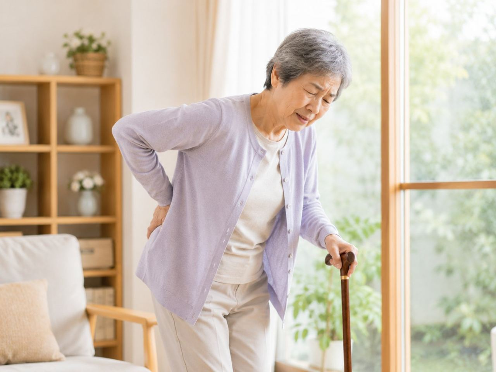

パーキンソン病があると、体のこわばりや動きの遅さで、外出そのものが重い仕事になってしまいます。摂津市にお住まいで、通院のたびに疲れてしまう、待合で長く座っているのがつらい、といった声をよく耳にします。のびのび訪問施術院は、そんなお宅へ国家資格を持つ施術者が伺い、住み慣れた部屋でこわばった筋肉を和らげるお手伝いをします。病気の治療は主治医のもとで続けながら、体のケアだけを家で受けられる、という考え方です。
この記事のポイント
パーキンソン病そのものを鍼灸で治したり、進行を止めたりはできません。診断や薬の調整は神経内科など主治医の領分で、服薬のタイミングも治療の要になります。訪問の鍼灸ができるのは、こわばった筋肉をゆるめて血のめぐりを促す補助、動ける範囲を保つための軽い機能訓練、こわばりから来る痛みやだるさを和らげる補助です。医師が必要と認め通院がむずかしければ医療保険の対象になり、自己負担は1割で1回約395円（総額3,950円）が目安。効き方には個人差があります。
千里丘・鳥飼のご自宅へ、通院に代わる選択肢を
パーキンソン病とつきあいながら暮らしていると、以前は当たり前だった通院そのものが、少しずつ重荷になってきます。摂津市は千里丘や正雀から鳥飼や味舌まで幅広く、駅から距離のあるお宅も多く、「JR千里丘まで歩くだけで一苦労」「阪急正雀の改札までの人混みが怖い」というお声をよく伺います。のびのび訪問施術院は、そうしたご自宅までこちらから伺い、玄関を上がったその場所で施術を行う訪問専門の鍼灸マッサージ院です。
ご本人が移動に消耗せずに済むだけでなく、付き添うご家族の予定を大きく空けなくてよいのも、在宅ケアならではの利点です。摂津市全体でどのような形で伺えるかは摂津市の訪問鍼灸マッサージのページにまとめていますので、あわせてご覧ください。
固縮・振戦・寡動｜摂津の暮らしのなかで出やすい困りごと
パーキンソン病では、手足がこわばって動かしにくくなる固縮、じっとしていても手が震える振戦、動作が遅く小さくなる無動・寡動、そしてバランスを崩しやすくなる姿勢反射障害といった症状が、少しずつ組み合わさって現れます。前かがみの姿勢が固定してしまい、寝返りや布団からの起き上がり、椅子やベッドへの移乗のたびに時間がかかる。歩き出しの一歩目が床に貼りついたように出ない「すくみ足」で、大阪モノレール摂津駅や南摂津駅前の横断歩道を渡りきれるか不安、といった具体的な場面が積み重なっていきます。
厄介なのは、こうした症状が一日の中でも波打つことです。薬がよく効いている「オン」の時間帯と、効きが切れて体が動きにくくなる「オフ」の時間帯があり、朝はなんとか動けても夕方には別人のように固まってしまう、という日内変動に悩まされる方が多くおられます。それぞれの症状の背景については「パーキンソン病のこわばり・ふるえ」で詳しく触れています。
訪問だからできる、薬の時間に合わせたケア
私たちが伺ってできるのは、固くなった筋肉をていねいにゆるめ、関節を痛みのない範囲でゆっくり動かして可動域を保つこと。そして、動かさないことで進んでいく廃用、つまり関節が固まり筋力が落ちていく悪循環を、少しでもゆるやかにしていくお手伝いです。前傾で縮こまりやすい胸や背中、股関節まわりに手を入れることで、寝返りや起き上がりが「昨日より少し楽」と感じていただける瞬間を大切にしています。
訪問の強みは、その方の生活リズムに合わせて時間を選べることです。薬が効いて体が動きやすいオンの時間に合わせて動きの練習を組んだり、逆にオフで固まりやすい時間帯にこわばりをゆるめる施術を入れたりと、服薬のタイミングを伺いながら内容を調整します。ただし、鍼灸やマッサージは病気そのものを治すものではなく、進行を止める治療でもありません。あくまで日々の動きやすさと生活の質を支えるための関わりであること、そして効き方には個人差があることは、はじめにお伝えしておきたい点です。
可動域を保つ機能訓練と、ご家族の介助負担のこと
鍼灸に加えて、軽い運動も組み合わせています。これらに追加の料金はかかりません。立ち座りや寝返りといった毎日の動作を、転倒を避けながら一緒に反復したり、すくみ足に対して足踏みのきっかけをつかむ練習を取り入れたりと、その方の状態に応じて内容を選びます。姿勢反射障害があると転倒のリスクが高まりますので、無理に負荷をかけるのではなく、「今できる動きを保つ」ことを軸に置いています。
こうした関わりは、日々介助されるご家族の負担軽減にもつながります。移乗のたびに全身で支えていた方が、ご本人の体が少しゆるむことで介助しやすくなった、という変化はよく伺うところです。介助のコツを施術のなかでお伝えすることもできますので、遠慮なくご相談ください。
費用と保険、そして摂津市のどこまで伺えるか
医療保険のはり・きゅうが対象とするのは神経痛・リウマチ・頸肩腕症候群・五十肩・腰痛症・頸椎捻挫後遺症の6疾病で、パーキンソン病にともなう痛みやこわばりに対しては、医師の判断による対応として伺います。いずれも医療保険（療養費）と医師の同意書があれば受けられ、要介護認定は不要です。介護保険の区分支給限度額とは別枠なので併用できます。機能訓練は鍼灸に加えて行い、別途の料金はいただきません。なお、同一部位について医療保険のリハビリと鍼灸を同じ月に同時に算定することはできません。
料金の目安は1回総額3,950円で、自己負担は1割の方で約395円。週2回のペースなら1割の方で月およそ3,160円です。エリア内は出張費なしの料金一律で伺います。仕組みの詳しい説明は「料金はいくら？医療保険の自己負担額と仕組み」を、鳥飼や別府など摂津市のどこまで来てもらえるかは「対応エリアはどこまで来てもらえる？」をご覧ください。まずはお気軽にお問い合わせいただければと思います。
よくある質問
摂津市にも来てもらえますか？
はい。摂津市は対応エリアに含まれます。ご自宅がエリア内かどうか判断に迷う場合も、お電話で住所をお聞かせいただければお答えできます。まずは体の困りごととあわせてご連絡ください。
パーキンソン病でも保険で受けられますか？
こわばりにともなう肩や腰の痛み、手足のしびれについて医師が施術を必要と認め、通院がむずかしければ、医療保険の対象になる場合があります。要介護認定がなくても、医師の同意書があれば受けられます。まずは主治医にご相談ください。
薬の治療と一緒に受けても大丈夫ですか？
はい。診断や薬の調整は神経内科など主治医が担い、鍼灸はその治療を続けながら体のこわばりを和らげる補助として加わります。治療に取って代わるものではありません。
鍼灸でパーキンソン病は治りますか、進行は止まりますか？
いいえ。病気そのものを治したり進行を止めたりはできません。できるのは、こわばった筋肉を和らげて血のめぐりを促し、動ける範囲を保つお手伝いです。効き方には個人差があります。
体がこわばって痛いときも受けられますか？
はい。こわばりから来る痛みやだるさには、その部位をていねいにほぐす補助をします。無理な強刺激は加えず、その日の体調やオン・オフの状態に合わせて行います。
薬が切れて動きにくい時間があります。時間は合わせられますか？
一日の波を教えていただければ、動きやすい時間に合わせて伺うといった工夫ができます。オン・オフの状態を確かめながら、その日の体に合わせてケアします。
出張費や交通費は別にかかりますか？
いいえ。エリア内であれば別途の出張費（出張料・交通費）はかからず、どこでも同額です。費用は1回3,950円で、保険適用後の自己負担は1割で約395円が目安です。
本人以外が問い合わせてもいいですか？
はい。ご家族はもちろん、ケアマネジャーや施設のご担当者からのお問い合わせも歓迎しています。お住まいが対応エリアかどうかも含め、電話でお答えできます。